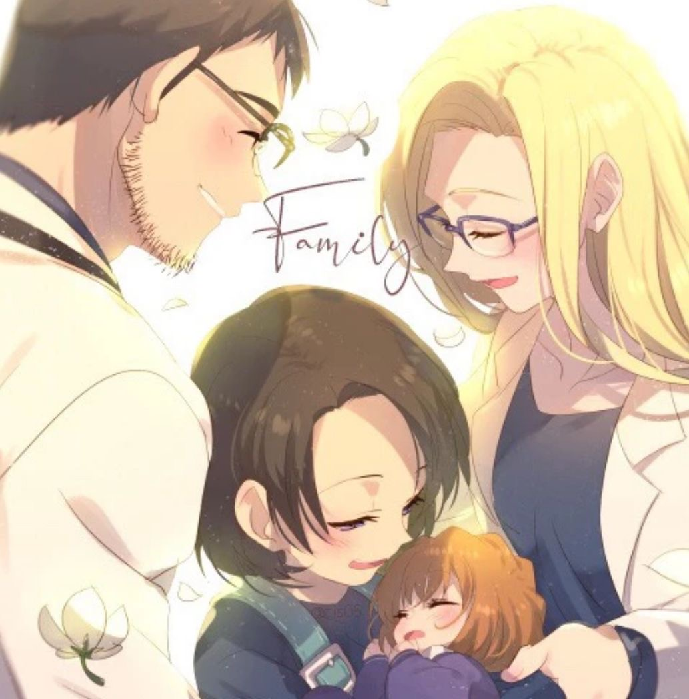
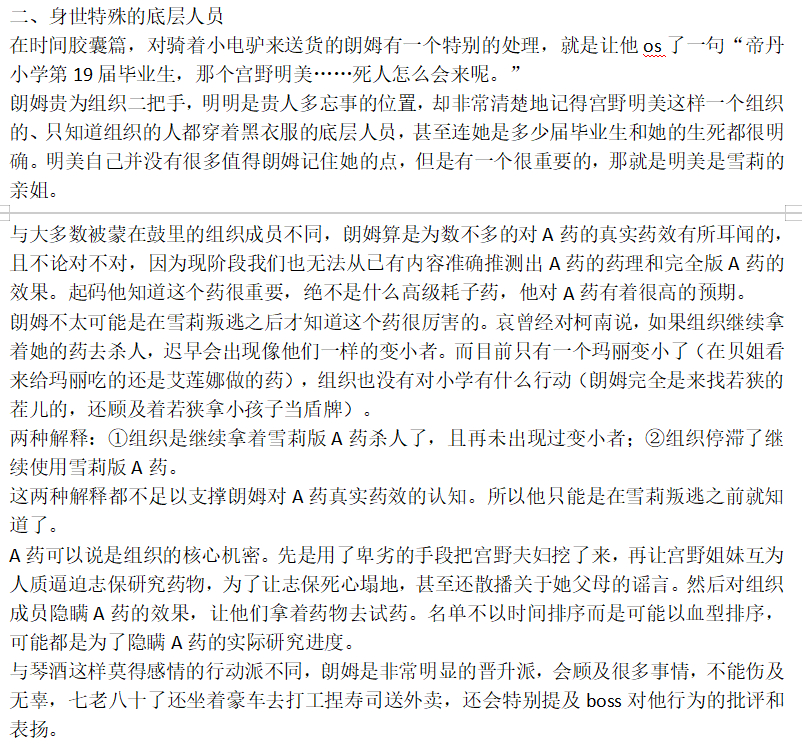
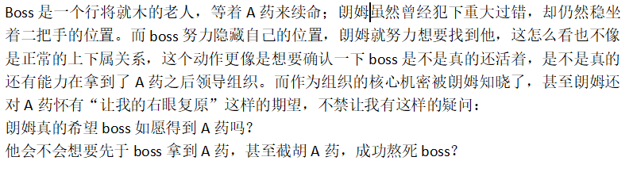
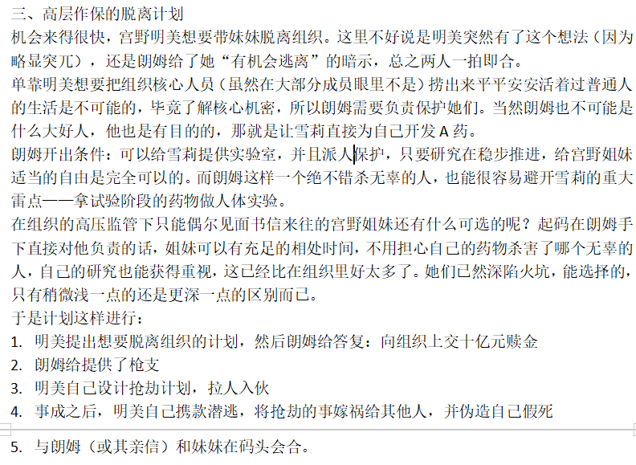
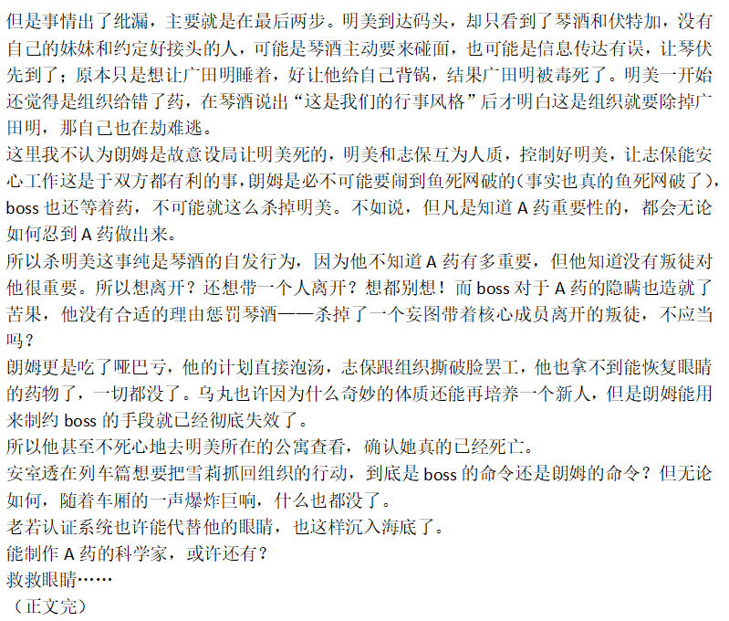
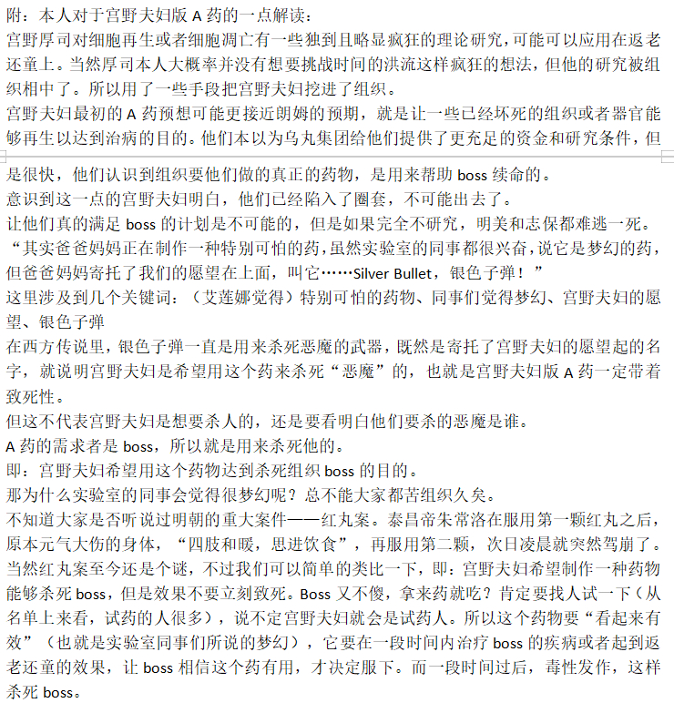
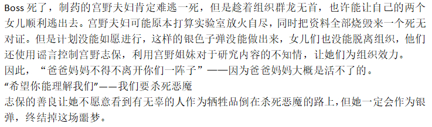

开宗明义，所谓朗明对接，指的是朗姆和明美曾经有过交流对接。这不是一篇很严格的分析文，至少不能算作是对细节抽丝剥茧且有信心经得起考究的文章，充其量算作是对漫画第二卷file.4《行踪不明的男人》到file.7《恶魔般的女人》（下称明美案）的补充。
电脑端复制很快，请勿插楼
一楼献给宫野一家。
电脑端复制很快，请勿插楼
一楼献给宫野一家。

长久以来，我一直对明美案有很深的不解。无外乎两点:
1. 为什么明美会真的那么天真，相信组织会在她抢到了十亿日元之后就放人？
2. 为什么琴酒完全没有考虑过明美死后宫野志保的反应？
在以下的论述中，我将引入组织内斗论作为论据之一。
1. 为什么明美会真的那么天真，相信组织会在她抢到了十亿日元之后就放人？
2. 为什么琴酒完全没有考虑过明美死后宫野志保的反应？
在以下的论述中，我将引入组织内斗论作为论据之一。
明美并不是单打独斗抢运钞车的，她的同行者总共有两人，一个是广田健三，一个是广田明。与动画不同的是，广田雅美并不是银行职员，她的初始人设（指到达事务所进行委托的时候）是一名高中生。明美的年龄推测在25岁，一个25岁的成年人，能打扮成高中生的样子，想必是不会高大健壮的，带着这样的一个人抢运钞车显然不是明智之举，那么抢运钞车这件事一定只能由明美起头。
一、素养堪忧的抢劫团伙
纵观整个明美案来看，这个抢劫可谓是一波三折。先是广田健三携款潜逃，明美和广田明分别委托侦探去寻找。然而在找的过程当中对于广田健三的描述都不一样，两方侦探找到了对一下线索不是很容易发现这俩人不对劲吗……
之后广田明把广田健三勒死了，再之后广田明还试图杀死明美以独吞所有的钱。职业素养如此差劲，这两个人完全不像是由组织指派给明美帮忙的样子，反而更像是明美自己找的。但是抢劫不是在大街上拉人入伙，抢得好将来一辈子可以花纸币，抢得不好将来可是只能到下面去花纸钱了。那么明美必须是开出丰厚的（当然可能是空头的）回报（比如十亿日元到手，给你们俩大头），加上准备工作（服装武器等，运钞车时间地点等），才可能将广田健三和广田明骗来。
原本的计划是明美给这两人下安眠药，然后自己带着钱走。结果从琴酒那里拿到的安眠药是毒药。
虽然若狭老师可以从民风淳朴的米花町枪店直接抢枪，但是从明美连安眠药都要从琴酒手里拿来看，武器应该也是组织提供的。
明美不清楚妹妹做的药的价值，所以认为十亿日元对组织更有吸引力可以理解。但是她并非不知道天资聪颖的妹妹从小就被送去国外留学，是重点培养的对象，结果组织还大力支持她们脱离组织，这一定是有问题的，哪有绑匪这么好心，真想抢劫，有的是比明美更好的人选。
所以能让明美放下心，认为这事儿可行的原因，就得是有组织高层作保。
而这个人，就是朗姆。
纵观整个明美案来看，这个抢劫可谓是一波三折。先是广田健三携款潜逃，明美和广田明分别委托侦探去寻找。然而在找的过程当中对于广田健三的描述都不一样，两方侦探找到了对一下线索不是很容易发现这俩人不对劲吗……
之后广田明把广田健三勒死了，再之后广田明还试图杀死明美以独吞所有的钱。职业素养如此差劲，这两个人完全不像是由组织指派给明美帮忙的样子，反而更像是明美自己找的。但是抢劫不是在大街上拉人入伙，抢得好将来一辈子可以花纸币，抢得不好将来可是只能到下面去花纸钱了。那么明美必须是开出丰厚的（当然可能是空头的）回报（比如十亿日元到手，给你们俩大头），加上准备工作（服装武器等，运钞车时间地点等），才可能将广田健三和广田明骗来。
原本的计划是明美给这两人下安眠药，然后自己带着钱走。结果从琴酒那里拿到的安眠药是毒药。
虽然若狭老师可以从民风淳朴的米花町枪店直接抢枪，但是从明美连安眠药都要从琴酒手里拿来看，武器应该也是组织提供的。
明美不清楚妹妹做的药的价值，所以认为十亿日元对组织更有吸引力可以理解。但是她并非不知道天资聪颖的妹妹从小就被送去国外留学，是重点培养的对象，结果组织还大力支持她们脱离组织，这一定是有问题的，哪有绑匪这么好心，真想抢劫，有的是比明美更好的人选。
所以能让明美放下心，认为这事儿可行的原因，就得是有组织高层作保。
而这个人，就是朗姆。
二、高层作保的脱离计划
机会来得很快，宫野明美想要带妹妹脱离组织。这里不好说是明美突然有了这个想法（因为略显突兀），还是朗姆给了她“有机会逃离”的暗示，总之两人一拍即合。
单靠明美想要把组织核心人员（虽然在大部分成员眼里不是）捞出来平平安安活着过普通人的生活是不可能的，毕竟了解核心机密，所以朗姆需要负责保护她们。当然朗姆也不可能是什么大好人，他也是有目的的，那就是让雪莉直接为自己开发A药。
朗姆开出条件：可以给雪莉提供实验室，并且派人保护，只要研究在稳步推进，给宫野姐妹适当的自由是完全可以的。而朗姆这样一个绝不错杀无辜的人，也能很容易避开雪莉的重大雷点——拿试验阶段的药物做人体实验。
在组织的高压监管下只能偶尔见面书信来往的宫野姐妹还有什么可选的呢？起码在朗姆手下直接对他负责的话，姐妹可以有充足的相处时间，不用担心自己的药物杀害了哪个无辜的人，自己的研究也能获得重视，这已经比在组织里好太多了。她们已然深陷火坑，能选择的，只有稍微浅一点的还是更深一点的区别而已。
于是计划这样进行：
1. 明美提出想要脱离组织的计划，然后朗姆给答复：向组织上交十亿元赎金
2. 朗姆给提供了枪支
3. 明美自己设计抢劫计划，拉人入伙
4. 事成之后，明美自己携款潜逃，将抢劫的事嫁祸给其他人，并伪造自己假死
5. 与朗姆（或其亲信）和妹妹在码头会合。
但是事情出了纰漏，主要就是在最后两步。明美到达码头，却只看到了琴酒和伏特加，没有自己的妹妹和约定好接头的人，可能是琴酒主动要来碰面，也可能是信息传达有误，让琴伏先到了；原本只是想让广田明睡着，好让他给自己背锅，结果广田明被毒死了。明美一开始还觉得是组织给错了药，在琴酒说出“这是我们的行事风格”后才明白这是组织就要除掉广田明，那自己也在劫难逃。
这里我不认为朗姆是故意设局让明美死的，明美和志保互为人质，控制好明美，让志保能安心工作这是于双方都有利的事，朗姆是必不可能要闹到鱼死网破的（事实也真的鱼死网破了），boss也还等着药，不可能就这么杀掉明美。不如说，但凡是知道A药重要性的，都会无论如何忍到A药做出来。
所以杀明美这事纯是琴酒的自发行为，因为他不知道A药有多重要，但他知道没有叛徒对他很重要。所以想离开？还想带一个人离开？想都别想！而boss对于A药的隐瞒也造就了苦果，他没有合适的理由惩罚琴酒——杀掉了一个妄图带着核心成员离开的叛徒，不应当吗？
朗姆更是吃了哑巴亏，他的计划直接泡汤，志保跟组织撕破脸罢工，他也拿不到能恢复眼睛的药物了，一切都没了。乌丸也许因为什么奇妙的体质还能再培养一个新人，但是朗姆能用来制约boss的手段就已经彻底失效了。
所以他甚至不死心地去明美所在的公寓查看，确认她真的已经死亡。
安室透在列车篇想要把雪莉抓回组织的行动，到底是boss的命令还是朗姆的命令？但无论如何，随着车厢的一声爆炸巨响，什么也都没了。
老若认证系统也许能代替他的眼睛，也这样沉入海底了。
能制作A药的科学家，或许还有？
救救眼睛……
（正文完）
机会来得很快，宫野明美想要带妹妹脱离组织。这里不好说是明美突然有了这个想法（因为略显突兀），还是朗姆给了她“有机会逃离”的暗示，总之两人一拍即合。
单靠明美想要把组织核心人员（虽然在大部分成员眼里不是）捞出来平平安安活着过普通人的生活是不可能的，毕竟了解核心机密，所以朗姆需要负责保护她们。当然朗姆也不可能是什么大好人，他也是有目的的，那就是让雪莉直接为自己开发A药。
朗姆开出条件：可以给雪莉提供实验室，并且派人保护，只要研究在稳步推进，给宫野姐妹适当的自由是完全可以的。而朗姆这样一个绝不错杀无辜的人，也能很容易避开雪莉的重大雷点——拿试验阶段的药物做人体实验。
在组织的高压监管下只能偶尔见面书信来往的宫野姐妹还有什么可选的呢？起码在朗姆手下直接对他负责的话，姐妹可以有充足的相处时间，不用担心自己的药物杀害了哪个无辜的人，自己的研究也能获得重视，这已经比在组织里好太多了。她们已然深陷火坑，能选择的，只有稍微浅一点的还是更深一点的区别而已。
于是计划这样进行：
1. 明美提出想要脱离组织的计划，然后朗姆给答复：向组织上交十亿元赎金
2. 朗姆给提供了枪支
3. 明美自己设计抢劫计划，拉人入伙
4. 事成之后，明美自己携款潜逃，将抢劫的事嫁祸给其他人，并伪造自己假死
5. 与朗姆（或其亲信）和妹妹在码头会合。
但是事情出了纰漏，主要就是在最后两步。明美到达码头，却只看到了琴酒和伏特加，没有自己的妹妹和约定好接头的人，可能是琴酒主动要来碰面，也可能是信息传达有误，让琴伏先到了；原本只是想让广田明睡着，好让他给自己背锅，结果广田明被毒死了。明美一开始还觉得是组织给错了药，在琴酒说出“这是我们的行事风格”后才明白这是组织就要除掉广田明，那自己也在劫难逃。
这里我不认为朗姆是故意设局让明美死的，明美和志保互为人质，控制好明美，让志保能安心工作这是于双方都有利的事，朗姆是必不可能要闹到鱼死网破的（事实也真的鱼死网破了），boss也还等着药，不可能就这么杀掉明美。不如说，但凡是知道A药重要性的，都会无论如何忍到A药做出来。
所以杀明美这事纯是琴酒的自发行为，因为他不知道A药有多重要，但他知道没有叛徒对他很重要。所以想离开？还想带一个人离开？想都别想！而boss对于A药的隐瞒也造就了苦果，他没有合适的理由惩罚琴酒——杀掉了一个妄图带着核心成员离开的叛徒，不应当吗？
朗姆更是吃了哑巴亏，他的计划直接泡汤，志保跟组织撕破脸罢工，他也拿不到能恢复眼睛的药物了，一切都没了。乌丸也许因为什么奇妙的体质还能再培养一个新人，但是朗姆能用来制约boss的手段就已经彻底失效了。
所以他甚至不死心地去明美所在的公寓查看，确认她真的已经死亡。
安室透在列车篇想要把雪莉抓回组织的行动，到底是boss的命令还是朗姆的命令？但无论如何，随着车厢的一声爆炸巨响，什么也都没了。
老若认证系统也许能代替他的眼睛，也这样沉入海底了。
能制作A药的科学家，或许还有？
救救眼睛……
（正文完）
2024-04-13 12:27 | 贴吧用户_5RAW2Rt:救救眼睛笑不活了2024-04-13 12:49 | 百浪多息º:这应该是三，序号出问题了，二在补图中，“身世特殊的底层成员”2024-04-13 15:04 | 剑锋寒光:有一个漏洞，就是朗姆疑似是在1100话到1109话之间才确认A药效果的，1100话他想的是“如果左眼还在就好了”，1109话变成“如果能恢复右眼就好了”，左眼是被戳瞎的恢复不了，1100话只是单纯感叹，但1109话提到的是衰老的右眼+背景里出现的A药。说明在这两话之间发生了什么让他确认了A药可以返老还童2024-04-14 00:55 | 百浪多息º:回复 剑锋寒光 :哎，这里确实，不过硬要解释也能说得通，自己的眼睛肯定还是希望还在，因为A药也是遥遥无期的事
注：朗明对接论能够解释宫野姐妹对这个计划的过于乐观。明美给秀一在抢劫前夜发的信息，能够感觉她真的认为自己可以顺利脱离组织，志保知道明美要带着她离开组织，却也只是担心“情况好像有点糟”。而信息的不对等，造就了琴酒对于宫野明美重要性的漠视，才最终导致了这场悲剧。
从漫画的故事线来看，明美面对的其实是个死局。灰原哀一定要出现成为柯南的伙伴，那她就一定要脱离组织；要脱离组织，那就只能是叛逃；叛逃需要充分的理由，就是明美之死。
所以说明美是剧情杀没问题的，故事写到这里了，她就只能这样，但我还是觉得这个故事过于仓促了，所以我写了“朗明对接论”，希望能在一定程度上完善这个故事，让里面涉及到的人物的行为，相对来说合理一些。
希望你看得开心。
从漫画的故事线来看，明美面对的其实是个死局。灰原哀一定要出现成为柯南的伙伴，那她就一定要脱离组织；要脱离组织，那就只能是叛逃；叛逃需要充分的理由，就是明美之死。
所以说明美是剧情杀没问题的，故事写到这里了，她就只能这样，但我还是觉得这个故事过于仓促了，所以我写了“朗明对接论”，希望能在一定程度上完善这个故事，让里面涉及到的人物的行为，相对来说合理一些。
希望你看得开心。
附：本人对于宫野夫妇版A药的一点解读：
宫野厚司对细胞再生或者细胞凋亡有一些独到且略显疯狂的理论研究，可能可以应用在返老还童上。当然厚司本人大概率并没有想要挑战时间的洪流这样疯狂的想法，但他的研究被组织相中了。所以用了一些手段把宫野夫妇挖进了组织。
宫野夫妇最初的A药预想可能更接近朗姆的预期，就是让一些已经坏死的组织或者器官能够再生以达到治病的目的。他们本以为乌丸集团给他们提供了更充足的资金和研究条件，但是很快，他们认识到组织要他们做的真正的药物，是用来帮助boss续命的。
意识到这一点的宫野夫妇明白，他们已经陷入了圈套，不可能出去了。
让他们真的满足boss的计划是不可能的，但是如果完全不研究，明美和志保都难逃一死。
“其实爸爸妈妈正在制作一种特别可怕的药，虽然实验室的同事都很兴奋，说它是梦幻的药，但爸爸妈妈寄托了我们的愿望在上面，叫它……Silver Bullet，银色子弹！”
这里涉及到几个关键词：（艾莲娜觉得）特别可怕的药物、同事们觉得梦幻、宫野夫妇的愿望、银色子弹
在西方传说里，银色子弹一直是用来杀死恶魔的武器，既然是寄托了宫野夫妇的愿望起的名字，就说明宫野夫妇是希望用这个药来杀死“恶魔”的，也就是宫野夫妇版A药一定带着致死性。
但这不代表宫野夫妇是想要杀人的，还是要看明白他们要杀的恶魔是谁。
A药的需求者是boss，所以就是用来杀死他的。
即：宫野夫妇希望用这个药物达到杀死组织boss的目的。
那为什么实验室的同事会觉得很梦幻呢？总不能大家都苦组织久矣。
不知道大家是否听说过明朝的重大案件——红丸案。泰昌帝朱常洛在服用第一颗红丸之后，原本元气大伤的身体，“四肢和暖，思进饮食”，再服用第二颗，次日凌晨就突然驾崩了。当然红丸案至今还是个谜，不过我们可以简单的类比一下，即：宫野夫妇希望制作一种药物能够杀死boss，但是效果不要立刻致死。Boss又不傻，拿来药就吃？肯定要找人试一下（从名单上来看，试药的人很多），说不定宫野夫妇就会是试药人。所以这个药物要“看起来有效”（也就是实验室同事们所说的梦幻），它要在一段时间内治疗boss的疾病或者起到返老还童的效果，让boss相信这个药有用，才决定服下。而一段时间过后，毒性发作，这样杀死boss。
Boss死了，制药的宫野夫妇肯定难逃一死，但是趁着组织群龙无首，也许能让自己的两个女儿顺利逃出去。宫野夫妇可能原本打算实验室放火自尽，同时把资料全部烧毁来一个死无对证。但是计划没能如愿进行，这样的银色子弹没能做出来，女儿们也没能脱离组织，他们还使用谣言控制宫野志保，利用宫野姐妹对于研究内容的不知情，让她们为组织效力。
因此，“爸爸妈妈不得不离开你们一阵子”——因为爸爸妈妈大概是活不了的。
“希望你能理解我们”——我们要杀死恶魔
志保的善良让她不愿意看到有无辜的人作为牺牲品倒在杀死恶魔的路上，但她一定会作为银弹，终结掉这场噩梦。
宫野厚司对细胞再生或者细胞凋亡有一些独到且略显疯狂的理论研究，可能可以应用在返老还童上。当然厚司本人大概率并没有想要挑战时间的洪流这样疯狂的想法，但他的研究被组织相中了。所以用了一些手段把宫野夫妇挖进了组织。
宫野夫妇最初的A药预想可能更接近朗姆的预期，就是让一些已经坏死的组织或者器官能够再生以达到治病的目的。他们本以为乌丸集团给他们提供了更充足的资金和研究条件，但是很快，他们认识到组织要他们做的真正的药物，是用来帮助boss续命的。
意识到这一点的宫野夫妇明白，他们已经陷入了圈套，不可能出去了。
让他们真的满足boss的计划是不可能的，但是如果完全不研究，明美和志保都难逃一死。
“其实爸爸妈妈正在制作一种特别可怕的药，虽然实验室的同事都很兴奋，说它是梦幻的药，但爸爸妈妈寄托了我们的愿望在上面，叫它……Silver Bullet，银色子弹！”
这里涉及到几个关键词：（艾莲娜觉得）特别可怕的药物、同事们觉得梦幻、宫野夫妇的愿望、银色子弹
在西方传说里，银色子弹一直是用来杀死恶魔的武器，既然是寄托了宫野夫妇的愿望起的名字，就说明宫野夫妇是希望用这个药来杀死“恶魔”的，也就是宫野夫妇版A药一定带着致死性。
但这不代表宫野夫妇是想要杀人的，还是要看明白他们要杀的恶魔是谁。
A药的需求者是boss，所以就是用来杀死他的。
即：宫野夫妇希望用这个药物达到杀死组织boss的目的。
那为什么实验室的同事会觉得很梦幻呢？总不能大家都苦组织久矣。
不知道大家是否听说过明朝的重大案件——红丸案。泰昌帝朱常洛在服用第一颗红丸之后，原本元气大伤的身体，“四肢和暖，思进饮食”，再服用第二颗，次日凌晨就突然驾崩了。当然红丸案至今还是个谜，不过我们可以简单的类比一下，即：宫野夫妇希望制作一种药物能够杀死boss，但是效果不要立刻致死。Boss又不傻，拿来药就吃？肯定要找人试一下（从名单上来看，试药的人很多），说不定宫野夫妇就会是试药人。所以这个药物要“看起来有效”（也就是实验室同事们所说的梦幻），它要在一段时间内治疗boss的疾病或者起到返老还童的效果，让boss相信这个药有用，才决定服下。而一段时间过后，毒性发作，这样杀死boss。
Boss死了，制药的宫野夫妇肯定难逃一死，但是趁着组织群龙无首，也许能让自己的两个女儿顺利逃出去。宫野夫妇可能原本打算实验室放火自尽，同时把资料全部烧毁来一个死无对证。但是计划没能如愿进行，这样的银色子弹没能做出来，女儿们也没能脱离组织，他们还使用谣言控制宫野志保，利用宫野姐妹对于研究内容的不知情，让她们为组织效力。
因此，“爸爸妈妈不得不离开你们一阵子”——因为爸爸妈妈大概是活不了的。
“希望你能理解我们”——我们要杀死恶魔
志保的善良让她不愿意看到有无辜的人作为牺牲品倒在杀死恶魔的路上，但她一定会作为银弹，终结掉这场噩梦。
2024-04-13 12:27 | 平者深黑:十分合理的推测
（全文结束）
补楼






火前留名
好像确实没什么实质性证据，不过作为补丁也不是不行
好像确实没什么实质性证据，不过作为补丁也不是不行
如此好贴怎么没人看

感觉明美事件是组织高层内斗的结果。高层利用信息差为了达成自己的目的，但是被有心人利用了。最后借了金恩的手杀了明美，也达到了让志保停工，不研究药物的目的。志保之前也表述组织给不出杀姐姐的理由，询问了很多次也不回应。也许不是组织给不出理由，而是本身杀明美就不是boss本身的意志，所以没人敢认，是高层信息差乱斗产生的既定结果。boss和朗姆都想用药物，杀明美不符合利益。金恩是目前已出场的三把手，而且不知道药物功效，推测下来比较大概率杀明美是贝姐的杰作。但诱惑明美出逃计划的可能是朗姆，为了从boss那得到志保，但被贝姐截胡了。
一些有些离谱的猜想……如果朗姆和明美真的有比较密切的联系，朗姆是不是有可能教过明美做饭？
SDB RECIPE里青山曾经说过哀喜欢日本料理，明美教过志保做饭，那明美做饭是跟谁学的呢？朗姆也确实正好擅长寿司之类的……
Q13 小哀（志保）是怎样学会做饭的呢？是姐姐教她的吗？
A 是的。
Q14 小哀的拿手料理是什么呢？小哀本人喜欢什么样的料理呢？（是日本料理，还是意大利菜之类的）
A 可能很普通地喜欢日本料理吧（笑）
Q51 赤井先生印象最深的明美做的料理是什么？
A 普通地觉得饭团和味增汤就超级美味吧。
Q76 胁田真的会握寿司吗？如果真的会的话是在哪里学的呢？
A 其实他很会做饭（笑）
SDB RECIPE里青山曾经说过哀喜欢日本料理，明美教过志保做饭，那明美做饭是跟谁学的呢？朗姆也确实正好擅长寿司之类的……
Q13 小哀（志保）是怎样学会做饭的呢？是姐姐教她的吗？
A 是的。
Q14 小哀的拿手料理是什么呢？小哀本人喜欢什么样的料理呢？（是日本料理，还是意大利菜之类的）
A 可能很普通地喜欢日本料理吧（笑）
Q51 赤井先生印象最深的明美做的料理是什么？
A 普通地觉得饭团和味增汤就超级美味吧。
Q76 胁田真的会握寿司吗？如果真的会的话是在哪里学的呢？
A 其实他很会做饭（笑）
2024-04-13 12:56 | 百浪多息º:谢谢深黑老师补充~2024-04-13 20:47 | 贴吧用户_5726KyK:二把手教下属做饭，不敢想2024-04-14 00:03 | 平者深黑:回复 贴吧用户_5726KyK :毕竟他试探卡迈尔也是亲自去的，我倒是觉得朗姆挺喜欢亲力亲为的
我觉得a药确实有再生的效果，再会篇那里灰原又是吃枪子又是从烟囱摔到地下，流了半天的血。
普通人在名柯里面的身体强度是一发子弹就似的那种，一个小孩的身体不可能这么耐揍
普通人在名柯里面的身体强度是一发子弹就似的那种，一个小孩的身体不可能这么耐揍
2024-04-13 15:00 | 剑锋寒光:对的，还有危命篇你柯一开头被犯人打穿了腹部，居然还能带着孩子们在钟乳石洞里周旋几个小时，撑到医院抢救。后续也没有留下任何后遗症。2024-04-13 19:09 | 黑龙江历史:也就是说，柯南君和哀酱已经是改造人力
假设宫野夫妇想要毒boss的前提是正确的，那毒性触发的条件就是boss和宫野家的dna。
按照这个想法就可以解释灰原，柯南，玛丽都能幸存的缘由。最近魔快故事线的融合，黑羽盗一的姓和家庭事业双收的情况下忽然搞假死，是否可以猜测boss就是工藤/黑羽家系的老登呢?
按照这个想法就可以解释灰原，柯南，玛丽都能幸存的缘由。最近魔快故事线的融合，黑羽盗一的姓和家庭事业双收的情况下忽然搞假死，是否可以猜测boss就是工藤/黑羽家系的老登呢?
2024-04-13 13:56 | 百浪多息º:为啥毒性的触发条件和dna有关呢？宫野夫妇只是想做一个类似延迟致死的药物，只给boss吃，根据我的理论完全版的宫野夫妇版A药谁吃了都是这个效果（而哀、柯吃的药都是雪莉用烧剩下的资料复活的版本）2024-04-13 14:34 | stuff15:刚刚回去重温了一下，生效的还有只老鼠😂，那应该不是DNA绑定了的。 不过我觉得boss这么谨慎的人，可能会试很久的药吧2024-04-13 14:37 | 百浪多息º:回复 stuff15 :是的吧，所以名单才那么长，其实工藤新一是雪莉版A药第一个试验者，那名单上其他的人其实都是吃了宫野夫妇版A药的2024-04-14 04:55 | 飞蚊0:回复 stuff15 :好家伙，想到合金装备里的死狐病毒了
emmm，lz认为的宫野明美过于理性而不够疯狂。青山给宫野家的标签是疯狂而冷静的理想主义者。可以确定宫野明美很清楚自己父母的理想和死亡原因，从目前的信息来看，宫野明美对于帮组织制药是极度反感的，她并不赞成宫野志保参与组织制药，或者说极端反对。所以和朗姆合作让宫野志保换个条件制药的可能性基本为0。
所以如果lz用看待理想主义者的角度去看待宫野明美的话，就会很清楚，宫野明美会参与劫案就是因为无论如何她都要制止宫野志保继续帮助组织制药。银色子弹是正义的子弹，随着宫野志保参与制药在组织越陷越深，和父母的道路背向而驰，而这其中很大一部分原因还是因为她自己，宫野明美能想到的也只有通过自己的死亡以解脱宫野志保。所以即使最后知道是必死的结局，她也会回去。
以及，朗姆确实有下克上的打算，但是早期他对a药的信息依旧是银弹复现版。或者整个组织在早期对a药的认知都是致死毒药，否则琴酒也不会轻易给工藤新一喂药。朗姆获取a药有效功能区别于银弹的时间应该在满月篇甚至伦敦篇之后。贝姐确认灰原哀和柯南是宫野志保与工藤新一——Boss得到相关信息——贝姐拿玛丽试药——确认a药功效。朗姆应该是在后两个阶段从Boss方面的组织成员得到的信息，个人怀疑他的消息来源是贝姐。
回归正题，明美死亡更大的可能贝姐是始作俑者。贝姐应该能够从系统信息查询到工藤新一的死亡，纽约篇之后贝姐将工藤新一视作神明，而工藤新一死于a药直接激怒了贝姐，这让她把怒火发泄向宫野姐妹。贝姐利用琴酒搞死宫野明美，后续宫野志保停止制药被组织处死基本都在她算计之中，给工藤新一复仇+停止银弹制药计划达成一箭双雕。
可以很明确，直到匹斯克确认灰原哀就是宫野志保之前，组织对于a药的认知是银弹复现，虽然它的计划目标明确，但是没有人认为真的可以有这种药。
所以如果lz用看待理想主义者的角度去看待宫野明美的话，就会很清楚，宫野明美会参与劫案就是因为无论如何她都要制止宫野志保继续帮助组织制药。银色子弹是正义的子弹，随着宫野志保参与制药在组织越陷越深，和父母的道路背向而驰，而这其中很大一部分原因还是因为她自己，宫野明美能想到的也只有通过自己的死亡以解脱宫野志保。所以即使最后知道是必死的结局，她也会回去。
以及，朗姆确实有下克上的打算，但是早期他对a药的信息依旧是银弹复现版。或者整个组织在早期对a药的认知都是致死毒药，否则琴酒也不会轻易给工藤新一喂药。朗姆获取a药有效功能区别于银弹的时间应该在满月篇甚至伦敦篇之后。贝姐确认灰原哀和柯南是宫野志保与工藤新一——Boss得到相关信息——贝姐拿玛丽试药——确认a药功效。朗姆应该是在后两个阶段从Boss方面的组织成员得到的信息，个人怀疑他的消息来源是贝姐。
回归正题，明美死亡更大的可能贝姐是始作俑者。贝姐应该能够从系统信息查询到工藤新一的死亡，纽约篇之后贝姐将工藤新一视作神明，而工藤新一死于a药直接激怒了贝姐，这让她把怒火发泄向宫野姐妹。贝姐利用琴酒搞死宫野明美，后续宫野志保停止制药被组织处死基本都在她算计之中，给工藤新一复仇+停止银弹制药计划达成一箭双雕。
可以很明确，直到匹斯克确认灰原哀就是宫野志保之前，组织对于a药的认知是银弹复现，虽然它的计划目标明确，但是没有人认为真的可以有这种药。
当然，贝姐也有可能还有一雕，琴酒因为处死宫野姐妹激怒Boss……被Boss搞死。如果是这样的话，贝姐视角害死工藤新一的两个凶手都受到了惩罚，愚蠢的银弹计划也会永远消失……
明美朗姆有联系这点，其实是符合“组织内有保雪莉的势力”这个假说的，还可以跟列车篇波本打算把雪莉活着带回组织联系起来。毕竟是朗姆直系下属，朗姆或许对他说：把雪莉活着带回来，我保她不死。而波本通过什么线索推测出朗姆是真的需要雪莉（比如朗姆知道琴酒杀了明美后很有意见之类的），认为雪莉在朗姆手下是安全的，于是他遵从了朗姆的吩咐，但没想过如何处理琴贝想杀雪莉的问题，于是列车篇翻车了……
2024-04-13 14:56 | 百浪多息º:如果真能是这样解释，列车篇的安室透形象能稍微扭转一点（也就一点）起码从原本想直接把她推回必死的火坑变成了留有一点余地2024-04-13 15:08 | 平者深黑:回复 百浪多息º :从冷血无情变成了考虑不周（）贝姐可能谜语人，但琴酒想杀雪莉不是什么秘密，应该不至于不知道。组织里是否还有其他想杀雪莉的人？他有多大把握能把雪莉活着带到朗姆的控制范围内呢？即使在这个假设下也有明美被杀的先例在，朗姆保证的事情能否顺利发展也是未可知的2024-04-13 20:23 | 百浪多息º:回复 平者深黑 :不是坏就是菜，果然只有黑波本才能解释清楚列车篇了哈哈哈2024-04-14 02:19 | mangomengke07:哎但是列车篇波本说的我的人会来回收你指的应该是公安的人？2024-04-14 02:36 | 平者深黑:回复 mangomengke07 :出自《sdb justice》Q4 在漆黑的特快列车中，他对宫野志保说「我的伙伴正在用直升机追踪，他们会把你带回去」，这里的伙伴指的是公安吗？想知道他那时候是计划怎么骗过贝尔摩德的…！ 答：是指黑衣组织的伙伴，所以没有必要骗她。2024-04-14 04:14 | mangomengke07:回复 平者深黑 :哦哦哦！明白了，谢谢
作为补丁还是不错的，只是我从来不觉得宫野姐妹对组织有什么“过于乐观”的猜想。
明美在见琴酒伏特加时，已经藏了十亿元，最后的评价也是【果然逃不出组织的毒手】，整个抢劫案都是明美独立设计的（劫匪似乎连枪支都没有，朗姆即使支持也非常有限）
小哀对朗姆更是毫无概念，如果明美与朗姆有联系，小哀应该会知道一些内情的。
明美在见琴酒伏特加时，已经藏了十亿元，最后的评价也是【果然逃不出组织的毒手】，整个抢劫案都是明美独立设计的（劫匪似乎连枪支都没有，朗姆即使支持也非常有限）
小哀对朗姆更是毫无概念，如果明美与朗姆有联系，小哀应该会知道一些内情的。
我倾向于是在朗姆篇，为了搜查捕风捉影的A药信息，朗姆对“已死”的宫野姐妹进行了调查，从而知道了明美和志保的情况（而不是明美活着时对朗姆有什么约定）
给A药打补丁把琴酒的B格给拉下来了
我也觉得，组织的内斗挺明显的，抓叛徒杀叛徒只是琴酒的想法，朗姆和乌丸到底是什么想法现在还不明朗，很有可能是组织会分裂成保柯南（想要药）和杀柯南（不能泄露组织秘密）两派，最最起码小哀绝对是第一重要人物，抛开柯南是主角不谈，乌丸想要活命，朗姆记得明美，只有琴酒要杀叛徒 这都跟小哀有关，而小哀的第一关联人是柯南，所以我觉得不用红方出手，组织内部先打一架吧，几方乱斗更好看
这都跟小哀有关，而小哀的第一关联人是柯南，所以我觉得不用红方出手，组织内部先打一架吧，几方乱斗更好看
这都跟小哀有关，而小哀的第一关联人是柯南，所以我觉得不用红方出手，组织内部先打一架吧，几方乱斗更好看